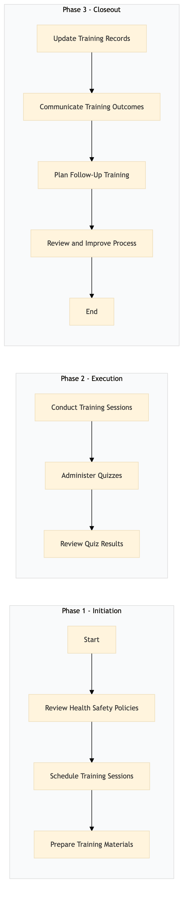

| Role | Steps |
|---|---|
| Human Resources Manager | 1.1 1.3 3.1 3.2 3.4 |
| Training Coordinator | 1.2 2.1 2.2 3.3 |
| Front Desk Agent | 2.1 2.2 |
| Housekeeping Staff | 2.1 2.2 |
| Step | Name | Role | System | Input | Output | KPI | Dec? | Exc? | Pain Point / Risk |
|---|---|---|---|---|---|---|---|---|---|
| 1.1 | Review Health & Safety Policies | Human Resources Manager | Oracle OPERA Cloud | Current health and safety policies document | Updated health and safety policies document | Less than 1 hour | N | Y | Keeping up with frequent regulatory changes |
| 1.2 | Schedule Training Sessions | Training Coordinator | Oracle OPERA Cloud, Book4Time | Updated health and safety policies document | Training schedule | Less than 2 hours | N | Y | Coordinating schedules with multiple departments |
| 1.3 | Prepare Training Materials | Training Coordinator | Oracle OPERA Cloud, Microsoft Power BI | Updated health and safety policies document | Training materials (slides, videos) | Less than 3 hours | N | Y | Creating engaging and comprehensive training content |
| 2.1 | Conduct Training Sessions | Training Coordinator, Front Desk Agent, Housekeeping Staff | Oracle OPERA Cloud, Book4Time | Training schedule, training materials | Employee attendance records | Less than 2 hours per session | N | Y | Ensuring all employees attend and understand the material |
| 2.2 | Administer Quizzes | Training Coordinator, Front Desk Agent, Housekeeping Staff | Oracle OPERA Cloud, Book4Time | Employee attendance records | Quiz results | Less than 30 minutes per session | N | Y | Accurate recording and analysis of quiz results |
| 2.3 | Review Quiz Results | Training Coordinator, Human Resources Manager | Oracle OPERA Cloud, Microsoft Power BI | Quiz results | Training effectiveness report | Less than 1 hour | Y | N | Identifying areas needing further training |
| 3.1 | Update Training Records | Training Coordinator, Human Resources Manager | Oracle OPERA Cloud, Workday HCM | Training effectiveness report | Updated employee training records | Less than 2 hours | N | Y | Maintaining accurate and up-to-date employee records |
| 3.2 | Communicate Training Outcomes | Human Resources Manager, General Manager | Oracle OPERA Cloud, Marriott Bonvoy CRM | Updated employee training records | Communication to employees and stakeholders | Less than 1 hour | N | Y | Effective communication of training results |
| 3.3 | Plan Follow-Up Training | Training Coordinator, Human Resources Manager | Oracle OPERA Cloud, Book4Time | Training effectiveness report | Follow-up training plan | Less than 1 hour | N | Y | Identifying and planning for additional training needs |
| 3.4 | Review and Improve Process | Training Coordinator, Human Resources Manager | Oracle OPERA Cloud, Microsoft Power BI | Follow-up training plan | Improved health & safety training process document | Less than 2 hours | N | Y | Continuous improvement of the training program |
Health & Safety Training process at a Marriott full-service hotel ensures all employees are trained on safety protocols and emergency procedures.